Инструкция к ребёнку · Миша, 9 лет
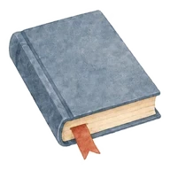
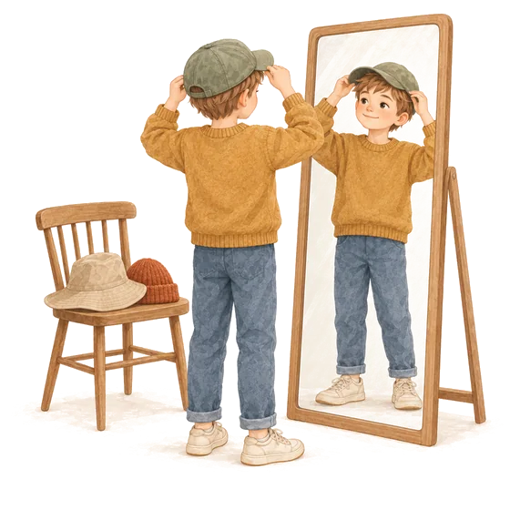
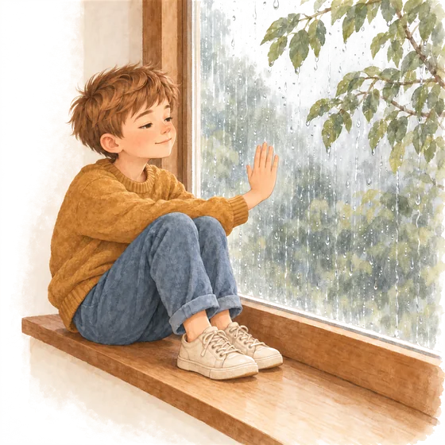
Как Миша устроен сейчас
Хамелеон с чертами Сейсмографа
«В школе всё нормально». А дома, через полчаса, слёзы из-за носка.
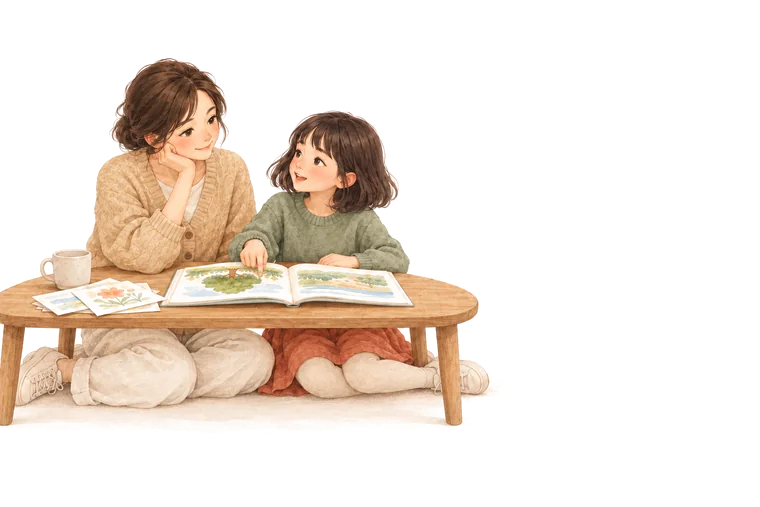
Глава 1
Как Миша устроен сейчас
Миша очень старается быть «правильным» там, где на него смотрят чужие взрослые. Он тонко чувствует, чего от него ждут, и подстраивается. В школе это выглядит как идеальное поведение. Но эта работа стоит сил, и выдыхает он дома, рядом с теми, с кем безопасно.
Вдобавок Миша остро слышит и чувствует: шум столовой, колючий шов, раздражение учителя. К концу дня всё это складывается в перегрузку.
Ниже девять шкал. Ни один край не лучше другого: это направление, куда Мишу сейчас тянет. Через полгода картина может измениться.
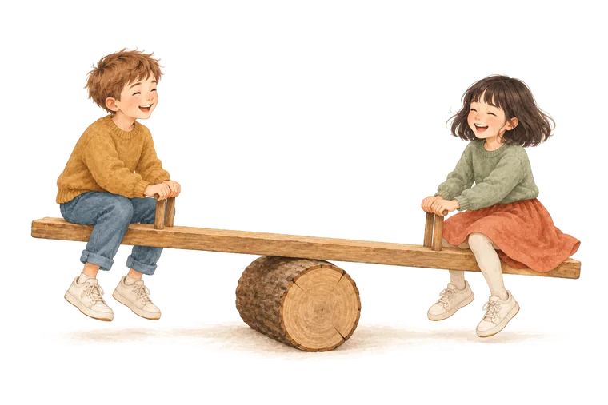
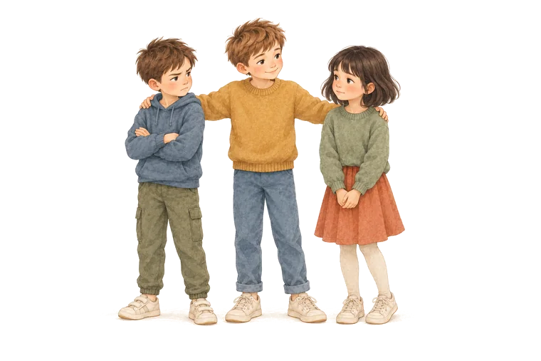
Глава 2
В чём его сила
- Понимает людей. Миша быстро замечает, кто расстроен, кто злится, кому нужна помощь. Взрослые часто удивляются, как точно он «читает» обстановку.
- Умеет договориться. Он мирит друзей, находит, во что играть всем, и редко ссорится с учителями.
- Замечает детали. Новую причёску у бабушки, фальшивую ноту, то, что в классе переставили парты.
- Старается. Ему важно сделать хорошо и не подвести. Это настоящая черта характера, а не страх, если взрослые не превращают её в страх.
- Добрый к слабым. Сейсмографы часто первыми видят, что кого-то обижают.
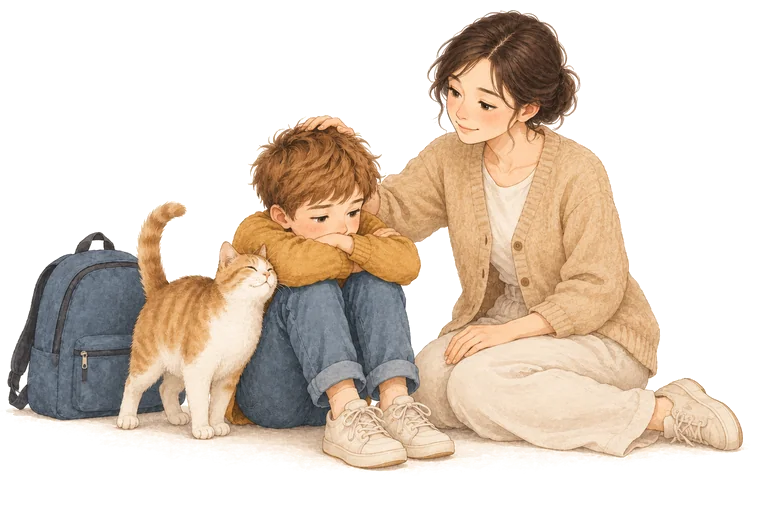
Глава 3
Где он устаёт
Это не недостатки, а цена его силы. Если знать её заранее, Мише можно помочь платить меньше.
- Весь день «держаться». Шесть уроков быть удобным, тихим, правильным. Это как весь день стоять на цыпочках.
- Шум и суета. Столовая, перемена, продлёнка, праздник в классе. Силы уходят, даже когда весело.
- Когда что-то неприятно, а сказать нельзя. Невкусная еда, обидное слово, слишком строгий тон. Миша промолчит, а вечером это выйдет слезами.
- Когда ему не верят. «В школе же всё хорошо, это ты дома капризничаешь». Для него это хуже любой усталости.
- Неожиданные перемены. Замена учителя, отменённая тренировка, гости без предупреждения.
Что взрослые часто понимают не так: «дома распустился». На самом деле дома он наконец может не держаться. Если ребёнок «разваливается» именно с вами, это знак доверия, а не плохого воспитания.
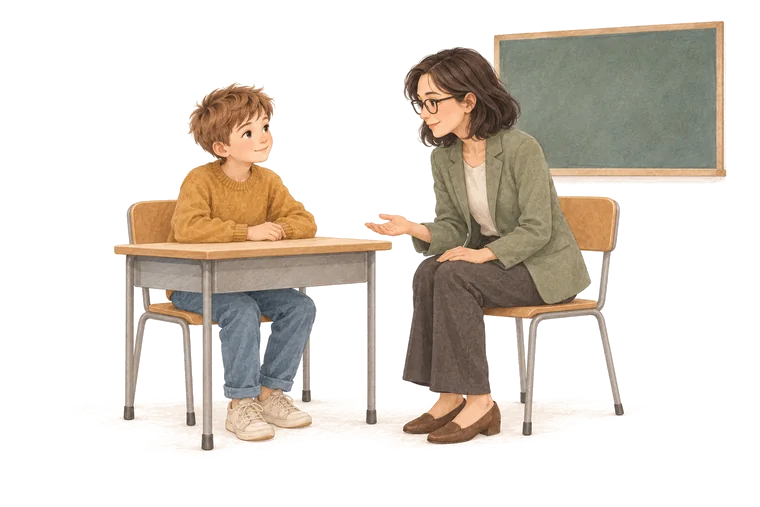
Глава 4
Для учителя и тренера
 Эту страницу можно переслать классному руководителю или тренеру. Она написана для них, без медицинских слов.
Эту страницу можно переслать классному руководителю или тренеру. Она написана для них, без медицинских слов.
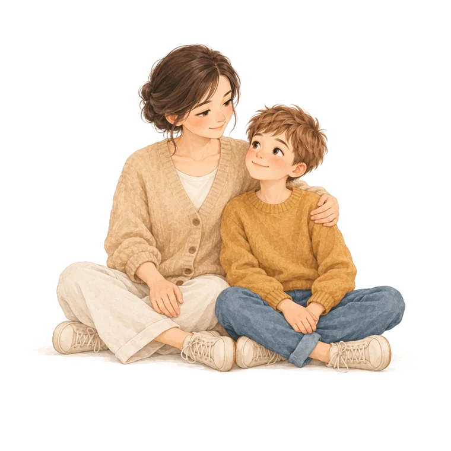
Глава 5
Для семьи
Для папы, бабушки, няни: всех, кто бывает с Мишей после школы.
Что помогает
- Первые полчаса после школы ничего не спрашивать и не требовать. Перекус, тишина, можно полежать.
- Спрашивать не «как дела», а «что сегодня было самым трудным» и «что было смешным».
- Называть чувство вслух: «Похоже, ты сегодня очень устал».
- Предупреждать о гостях и поездках заранее.
- Говорить ему: «Со мной можно не стараться».
Что лучше не делать
- Наказывать за вечернюю вспышку. Это усталость, а не непослушание.
- Говорить «в школе же ты можешь себя вести».
- Объяснять и воспитывать во время слёз. Сначала успокоить, обсудить потом.
- Хвалить за удобство: «молодец, что не капризничал». Он и так слишком старается быть удобным.
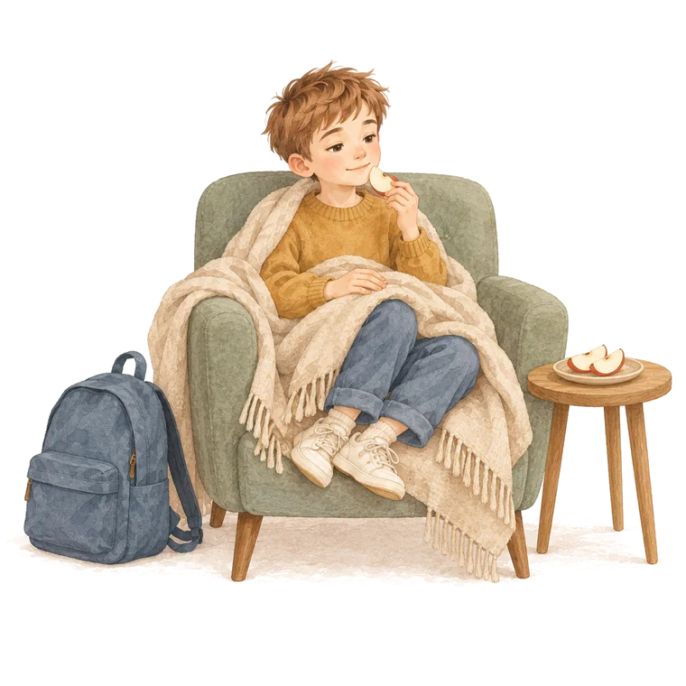
Глава 6
Хороший школьный день
Это не расписание, а пример дня, после которого у Миши и у вас остаются силы.
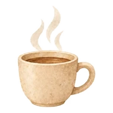
Утро- Портфель и одежда собраны с вечера. За завтраком два слова о том, что будет сегодня, особенно если что-то необычное.
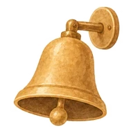
В школе- Мягкая одежда без колючих швов. Если можно, наушники или беруши в кармане для продлёнки.
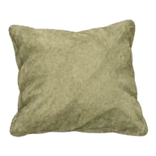
После школы- Полчаса тишины: перекус, свой угол, никаких вопросов про оценки.
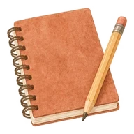
Уроки- После паузы, а не сразу. Вы рядом, но не над душой.
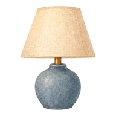
Вечер- Десять минут только вдвоём, без телефона. Здесь он обычно и рассказывает, что было на самом деле.
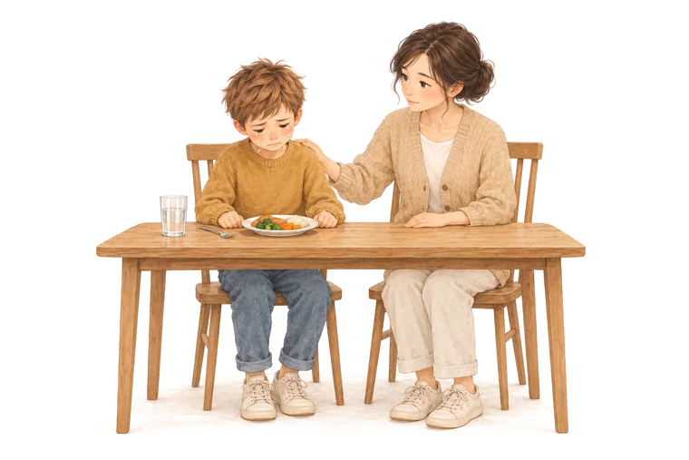
Глава 7
Трудные моменты
Четыре ситуации, которые чаще всего случаются с такими детьми, и что в них помогает.
Глава 8
План на месяц
Для вас, а не для Миши. По одному шагу в день, около 10 минут. Отмечайте сделанное, страница это запомнит. Пропуски нормальны.

Где поможет ИИ
Скопируйте фразу, откройте любой ИИ-чат (Claude, ГигаЧат, Алису) и замените слова в квадратных скобках. В полной версии таких фраз пятнадцать, здесь четыре.
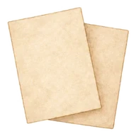
Шаг 1Скопируйте фразу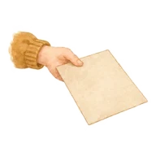
Шаг 2Вставьте в чат ИИ Шаг 3Замените слова в скобках
Шаг 3Замените слова в скобках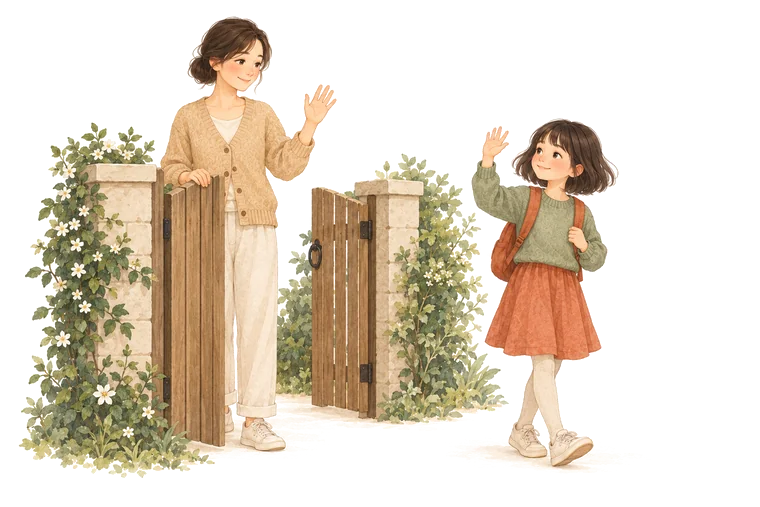
Это вся инструкция. Возвращайтесь к ней, когда что-то меняется. Через полгода тест можно пройти ещё раз: дети растут, и картина может стать другой.
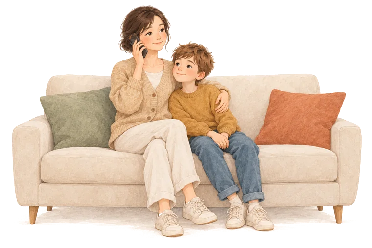
Когда стоит поговорить со специалистом
Этот блок одинаковый для всех детей и не зависит от результата. Тест не видит СДВГ, аутизм, тревожное расстройство и другие особенности и не может их исключить.
Поводом сходить к педиатру или детскому психологу будет, если Миша постоянно держится через силу, часто жалуется на живот или голову перед школой, плохо спит, отказывается ходить в школу или говорит о себе плохо. Начать можно с педиатра: он посмотрит ребёнка целиком и при необходимости направит дальше. По полису ОМС это бесплатно. Ещё есть бесплатные психолого-педагогические центры (ППМС) в каждом регионе.
Если сейчас тяжело вам или ребёнку, поговорить можно прямо сейчас, бесплатно и анонимно:
Россия
8 800 2000-122детский телефон доверия: для детей, подростков и родителей, бесплатно 8 800 600-31-14линия психологической помощи Минпросвещения (МГППУ) для детей и родителей, бесплатно, круглосуточно 8 800 333-44-34кризисная линия телефона доверия для взрослых, бесплатно, круглосуточно 8 495 989-50-50экстренная психологическая помощь МЧС, круглосуточноКазахстан
111единый контакт-центр: семья, дети, насилие, круглосуточно, бесплатно 150телефон доверия для детей и молодёжи 1303Центр психического здоровья, АлматыЕсли есть угроза жизни
112Россия и Казахстан, круглосуточноИнструкция к ребёнку · первая версия. Это описание того, как ребёнку легче сейчас, а не диагноз. Образец составлен для вымышленного ребёнка; в настоящей инструкции тексты подбираются под ваши ответы.